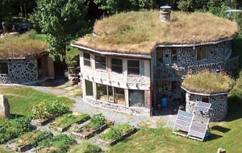
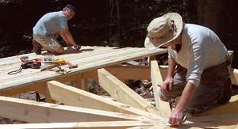
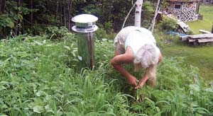
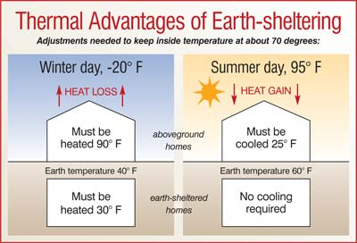

Earth-Sheltered Homes
These energy-efficient houses are bright, airy, dry and quiet.
By Rob Roy
October/November 2006
Back in the ’70s, earth-sheltered housing enjoyed great popularity, thanks in part to the energy crisis resulting from the 1973 oil embargo. Adventurous builders and researchers explored various forms of earth-sheltered building, from underground excavated spaces to surface-level buildings with earth piled in berms against their walls. People searching for alternatives to conventional building showed that sheltering a building with earth could reduce energy costs for both heating and cooling by half or more - at little or no increased expense.
Once again, America’s overconsumption of energy has made energy efficiency an important consideration in all facets of our lives, including home design. In addition, there is a new awareness among “green” and “natural” builders that we are “paving and roofing this country to death,” in the words of architect and underground-building guru Malcolm “Mac” Wells.
An earth-bermed house can reap about 95 percent of the energy advantages of a fully underground home, and adding an earth roof, or living roof, further promotes planetary health by “greening” the house’s footprint. Most buildings have a negative impact on the planet. Combining earth-sheltered walls with a living roof has the potential for the least negative impact.
Mac Wells also advocates the reclamation of “marginal” land; he says we should not build on the best, most beautiful property available, but instead take land that has been diminished by human activity and return it to greenscape. At Earthwood, our home in West Chazy, N.Y., my wife, Jaki, and I built our earth-sheltered, earth-roofed home in an abandoned gravel pit, converting almost two acres of near-lifeless moonscape to a living, green, oxygenating earthscape.
How Earth-sheltering Works
A common misconception is that earth is a great insulator. In fact, earth is a poor insulator, even more so if it’s wet. However, earth is a good capacitor that can absorb and store heat; it’s excellent thermal mass. It stores what we call warmth, but it can also store what I call “coolth,” which is, after all, simply heat at a lower temperature.
Two independent thermal masses interact in an earth-sheltered home. The first is the mass of the earth itself, over which we have very little control. The second is the mass of the building, over which we have great control through the placement of insulation. Building a house 6 to 8 feet below grade in far northern New York, where I live, is like moving it 1,000 miles to the south, into a mild winter climate much like that of Charleston, S.C. Heating is the most important energy consideration where I live, but earth-sheltering helps with cooling as well. At the depths at which we typically build - 6 to 8 feet for a single-story home, a few feet deeper for two stories - the earth temperature in our area varies from about 40 degrees in early March to about 60 degrees in late August. We can use this narrow 20-degree temperature range to our advantage for both winter heating and summer cooling. (See “Thermal Advantages of Earth-sheltering.”)
It is important to insulate between the home’s structural mass and the earth’s mass. Without insulation, the earth will wick heat out of the home and bring it to a matching temperature. In winter here, that would be 40 degrees - not comfortable, but a far better starting place for wintertime heating than sub-zero surface temperatures. But if we place insulation between the mass of the home and the earth’s mass, we can keep the home’s internal temperature at comfortable levels. Your climate determines how much insulation to use and how deep to place it. The entire earth-sheltered portion of Earthwood is wrapped with extruded polystyrene insulation, including under the concrete floor and around the concrete foundation footings.
Advantages of a Living Roof
You don’t have to place an earth roof on an earth-sheltered home, but it has some compelling advantages in addition to the ecological benefit already mentioned:
Longevity. The properly designed earth roof is the longest-lasting roof you can build, because the earth and insulation protect the waterproofing membrane from the three conditions that eventually break down every other common roof surface: ultraviolet radiation, erosion and freeze-thaw cycling, which all damage exposed roofing over time.
Insulation. Solid earth is not good insulation, but 3 or 4 inches of light soil with vegetation growing in it has some insulation value. In winter, the cold, uneven earth roof holds snow better than other roofs, and fluffy snow is a good - and free - insulator.
Cooling. The plants growing on a living roof shade it, and the evaporation of moisture off the roof actively cools it.
Protection. Even a few inches of soil protects against fire, radiation and sound. Fully bermed sidewalls that meet the earth roof also add protection against earthquakes, tornadoes and hurricanes.
Aesthetics. The earth roof is hands-down the most beautiful roof you can build, particularly one planted with wildflowers or several different sedum varieties.
Effective building techniques
Within the larger field of earth-sheltered housing, I have specialized in building techniques that are appropriate for an owner-builder and involve moderate costs for materials. There is not space in a magazine article to cover the actual construction and technical details of all the various materials, but the following techniques have worked well for us on several buildings.
Surface-bonded block walls. You can build below-grade walls using poured concrete, stone masonry or conventionally mortared blocks. But my favorite is concrete blocks, stacked dry (no mortar between blocks) and coated with an eighth-inch layer of fiber-reinforced surface-bonding cement. Even inexperienced builders can construct such walls - applying the surface-bonding cement is not unlike frosting a cake. A surface-bonded wall does not have the tremendous moisture content of a poured concrete wall, which I would not advise inexperienced builders to tackle anyway. And the millions of embedded reinforcing fibers make it much stronger than a conventionally mortared wall against the lateral pressure of the earth berm.
Heavy timber roof framework. I advocate construction using heavy timbers you might get at a local sawmill at reasonable cost. For example, Earthwood is stoutly built, with a post-and-beam frame consisting of 8-by-8-inch posts and girders varying from 8 by 8 inches up to a 14-foot oak girder with a 10-by-12-inch cross-section. Our roof rafters are 5 by 10 inches, or 6 by 10 inches where spans are a little greater. Over the rafters, we use 2-by-6-inch tongue-and-groove planking.
Have your plans designed or checked by a qualified structural engineer. It is imperative that the framework be engineered to support the required load. This includes the load of the structure itself, typically 10 to 15 pounds per square foot (PSF) for this type of structure; the weight of the saturated earth (about 10 PSF for every inch); and your snow load (ask local officials; mine is 70 PSF). Earthwood is designed to carry a combined load of 185 PSF.
Waterproofing and drainage. In an earth-sheltered home, the earth is your friend, but the water in it is not. We place at least 4 inches of tamped sand below the floor for drainage, but the roof and any walls in contact with earth must be thoroughly waterproofed. Several good waterproofing membranes are available on the market, including large thick sheets of rubber, Neoprene or EPDM (two kinds of artificial rubber) and various bentonite clay products.
I prefer the membranes composed of laminated top layers of black polyethylene backed with a sticky bituminous material. Backing paper protects the membrane from sticking prematurely to unintended objects. The rolls are typically 3 feet wide and 50 to 75 feet long. I like these membranes because they provide high-quality waterproofing and they’re moderately priced (50 cents to $1 per square foot) and easy for inexperienced builders to apply. You simply pull the backing paper off the underside of the membrane as you roll it onto the surface to be sealed. Each sheet typically laps over the previous one by 2 1/2 to 4 inches. Installers press the sticky bituminous mastic down with the heels of their hands. Some of these products work better after the application of a “surface conditioner” (like a primer), which improves the adhesion of the sticky surface to the wood. Factory-finished edges are pre-caulked, but cut edges must be sealed with a compatible caulking. A membrane of this type goes on very quickly. A couple of people could cover a simple, shallow-pitched roof of, say, 1,200 square feet in a few hours.
Over and over again, I tell students in my earth-sheltered building classes that “drainage is the better part of waterproofing.” If you provide an easier place for rainwater to go than into your house, it will go there. I used to make my own drainage layer out of crushed stone covered with loose hay or straw as a filtration mat to keep the fine particles of earth out of the drainage layer. It worked well, but was a lot of hard work to install and added another 20 PSF to the design load.
Now, I use one of the composite drainage materials made for this purpose by several different companies. They essentially create a quarter-inch channel of air over the roof, and the water travels swiftly along it down the pitched roof and drips off the edge. They consist of a tough nylon mesh covered on one or both sides with a filtration mat. These drainage products typically cost between 50 cents and $1 per square foot.
Building the Living Roof
I recommend a pitch for an earth roof between 1 in 12 (1 foot of rise in 12 feet of horizontal run) and 2 in 12; 1.5 in 12 is my favorite. Water drains readily in this pitch range, yet the earth does not slump off the roof.
I install the waterproofing membrane directly over the roof planking. Over the membrane, we place sheets of extruded polystyrene insulation, the thickness depending on location, local codes and the purpose of the building.
Atop the insulation, I install a layer of 6 mil black polyethylene. This inexpensive layer is not intended as a waterproofing membrane - you’ve already installed that. Rather, it acts as the base of the all-important drainage layer. Water rides this plastic quickly to the drip edge.
The composite drainage matting goes on top of the polyethylene. The earth goes over the drainage matting. There is no gain in placing more earth on the roof than needed to maintain the chosen green cover. Remember, saturated earth is heavy - don’t surpass your total engineered load.
Finally, plant the roof, choosing native plants. Sedum is a succulent plant that stores moisture in its leaves, perfect for seeing a living roof through a drought situation without the need for watering. Sedum can grow in 3 inches of soil, and many varieties are quite colorful. Grasses and wildflowers need 7 to 8 inches of soil. In arid climes, go with desert plants.
Rob Roy is director of Earthwood Building School in West Chazy, N.Y., which he has operated with his wife, Jaki, since 1981. Earthwood offers instruction in cordwood masonry, earth-sheltered housing and post-and-beam framing techniques “for the rest of us.”
This article was adapted from Roy’s new book,Earth-Sheltered Houses: How to Build an Affordable Underground Home, a Mother Earth News“Book for Wiser Living” from New Society Publishers.
|
 ROB ROY The earth roof is hands-down the most beautiful roof you can build. |
 ROB ROY Author Rob Roy (right) and an assistant snap a chalk line to guide trim cuts as they install roof decking over radial rafters. |
 ROB ROY A bituminous waterproof membrane goes over the decking. |
|
 ROB ROY Jaki Roy weeds the roof before the wildflowers come into bloom. |
 MATTHEW T. STALLBAUMER Thermal Advantages of Earth-sheltering. |
|